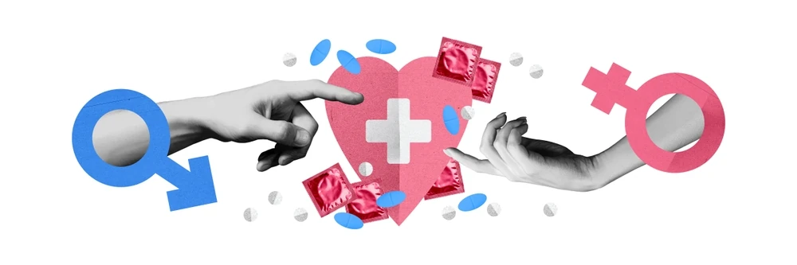

Salud Sexual
Apunte sobre salud sexual, derechos sexuales y educación integral para adolescentes y jóvenes.
1. ¿Qué es la salud sexual?
Es un estado de bienestar físico, emocional, mental y social relacionado con la sexualidad, no solo la ausencia de enfermedad.
2. ¿Cómo podemos cuidar la salud sexual?
Con educación, comunicación abierta, sexo seguro y acceso a servicios de salud.
3. ¿Qué protegen los derechos sexuales?
Protegen la libertad de decidir sobre la propia sexualidad, incluyendo la intimidad y la autonomía corporal.
4. ¿Qué garantizan los derechos sexuales?
Garantizan el acceso a información, educación y servicios de salud sexual y reproductiva de calidad.
5. ¿Qué acciones deben tomar las instituciones para la salud sexual?
Deben crear políticas públicas que garanticen el acceso universal a servicios de salud sexual y educación integral.
6. ¿Qué lugar ocupa el matrimonio y el embarazo en bajas escolares?
Son una causa principal de deserción escolar, especialmente en mujeres adolescentes.
7. ¿Con quiénes podemos acudir a hablar de estos temas?
Con familiares, amigos de confianza, docentes, psicólogos o profesionales de la salud.
8. ¿Cuál es el objetivo del Día de la Salud Sexual?
Promover la concientización global sobre la importancia de la salud sexual y los derechos sexuales.
9. ¿Por qué es importante hablar de sexualidad en la adolescencia?
Para que los adolescentes tomen decisiones informadas, seguras y responsables, previniendo riesgos y promoviendo el bienestar.
